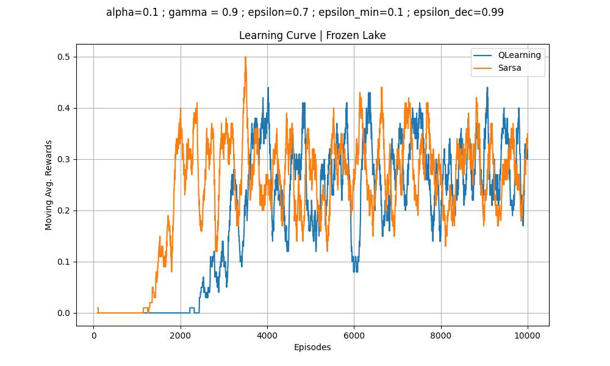

Comentários sobre as entregas referentes ao ambiente Frozen Lake.
Seguem exemplos de resultados bem apresentados.
Um exemplo de resultado onde o agente aprendeu a tarefa

Um exemplo de resultado onde o agente não aprendeu a tarefa

Validação final do modelo
Para validar o modelo treinado, foi utilizado o código abaixo:
import gymnasium as gym
import numpy as np
from numpy import loadtxt
env = gym.make('FrozenLake-v1', render_mode='ansi').env
q_table = loadtxt('data/q-table-frozen-lake-qlearning_conf1.csv', delimiter=',')
rewards_list = []
for j in range(0,100):
rewards = 0
for i in range(0,100):
(state, _) = env.reset()
done = False
while not done:
action = np.argmax(q_table[state])
state, reward, done, _, info = env.step(action)
rewards += reward
rewards_list.append(rewards)
print(f'média = {np.mean(rewards_list)}, desvio padrão = {np.std(rewards_list)}')
Para a primeira opção de configuração de hiperparâmetros, o resultado foi:
média = 82.68, desvio padrão = 3.5408473562129164
Para a segunda opção:
média = 5.22, desvio padrão = 1.967638178121171
Reforçando que a segunda configuração não foi capaz de aprender a tarefa.
Inclusive, o problema da segunda configuração está no valor de \(\epsilon_{dec}\) que é muito alto. Se mudarmos o valor para 0.999, o resultado melhora:
média = 78.93, desvio padrão = 4.667451124543244